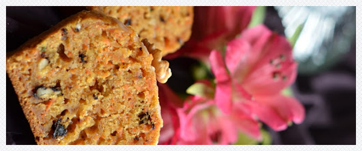

Muffinki marchewkowe
Składniki
- 2 szklanki mąki
- 2 łyżeczki sody oczyszczonej
- 3/4 szklanki cukru
- czubata łyżeczka cynamonu
- dwa jajka
- pół szklanki oleju
- pół szklanki mleka
- 3 duże marchewki
- dwa twarde jabłka
- garść rodzynek
- dwie łyżki siekanych orzechów laskowych lub włoskich

Piekarnik ustawić na 180 st. Mąkę z sodą przesiać przez sitko, wymieszać z cukrem i cynamonem. Marchewki i jabłka obrać i zetrzeć na tarce z dużymi oczkami ( jabłka można pokroić w kostkę). Wymieszać widelcem jajka, olej i mleko, dodać starą marchew i jabłka. Formy do muffinek wyłożyć papierowymi papilotkami lub jeśli silikonowe- posmarować olejem, wypełnić ciastem zagłębienia. Piec ok. 30 minut, aż patyczek do szaszłyków po wyjęciu z babeczki będzie suchy, nieoklejony. Studzić w lekko uchylonym piekarniku.